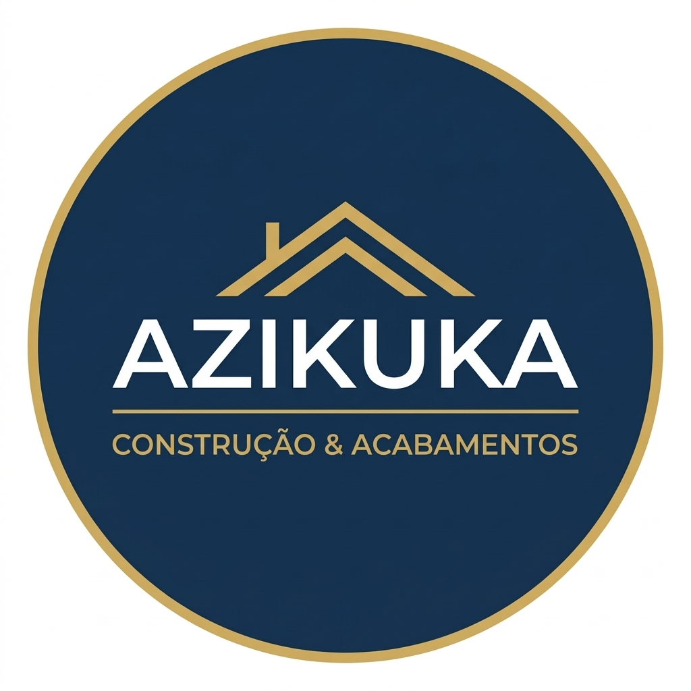

Gestão completa de marketing e presença digital. Desenvolvimento de estratégias visuais, criação de conteúdos gráficos e aplicação de tráfego pago para maximizar o alcance de clientes.

Explora abaixo os registos visuais, criativos publicitários e vídeos institucionais desenvolvidos para este projeto.